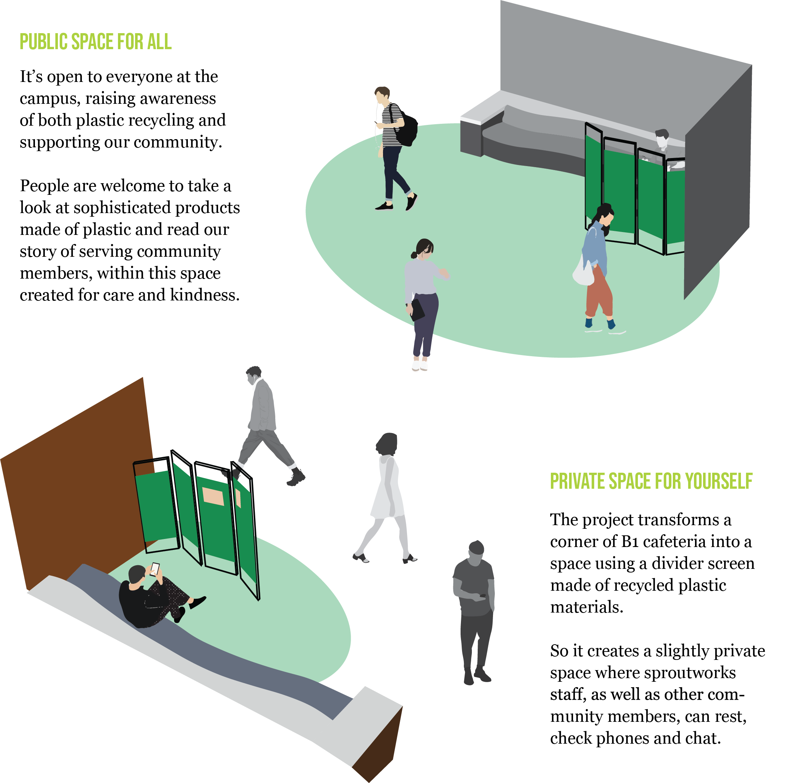

Plastic Booth
is an experimental project intended to com- bine community service-learning and environmental
solutions. It primarily functions as a private break area for the university cafeteria staff to
take a break during their long working hours. At the same time, it focuses on material usage,
raising public awareness on the issue of plastic waste.
| Product Fabrication | User Analysis & Test | Space Design |

Context: Sproutworks is the cafeteria partner of our university. They are a team with
environmental awareness, replacing plastic cups, containers with metal and paper ones.
But we identify a problem of the Sproutworks staff: they have little proper rest during their long working hours.
Lacking a private rest space for themselves brings additional inconvenience.
Goal: Plastic Booth attempts to ease the situation where Sproutworks staff don't have a
private break room. As a divider screen, it creates a border between the public cafeteria sphere and
the staff's private sphere, and also shows sophisticated products made of plastic.
People are welcome to take a look at them and read our story of plastic recycling and supporting our community.
Model: This project was created for a service-learning class, where students learn theories in
the classroom and at the same time engage in volunteering work and reflective activities. Our team identify
a problem of our community partner, the Sproutworks staff, through interviews in length and observing their work.
We focus on their pain point and value their perspective throughout the whole design process.
Material: Instead of purchasing new materials, our team found an efficient way to recycle and reuse plastic waste.
We firstly researched on the exceeding waste of plastics, of which the consequences would last hundreds of years,
harming the planets and the living creatures.
We then experimented
(1) the types, qualities and characters of different plastics;
(2) ways of breaking down plastic products and reshaping them into new design;
(3) replacement of plastic, such as bioplastic.
Space: We chose to create a divider screen that people can easily move and install as a
slightly private space for short rests, having a video call, or chatting. The space is approximately
2 square meters, next to a sofa area and close to the cafeteria entrance, following the university regulation
on public safety. Additionally, the projects create more than just space for rest, but also a space for raising awareness on
plastic waste issues. It serves as a living exhibition of recycling, remaking, and reusing plastics.



We named this special space Plastic Booth. It transforms a corner of the university cafeteria
into a space with privacy where staff finds more comfortable to take a break from long working
hours. It also functions as a living exhibition showing various ways of remaking plastics in order to raise
awareness on plastic waste.
It's open to everyone - students, staff, and more - to take a short break or to explore how
plastic bags can be remade into an earring.